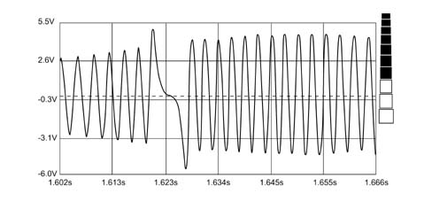

1060GA RPM SENSOR EFFICIENCY CHECK
- Path
- Test > 10 ENGINE > 1060 DIESEL INJECTION SYSTEM > 1060G PRESSURE PUMP ELECTRIC CONTROL > 1060GA RPM SENSOR EFFICIENCY CHECK
- Kind
- test / check procedure
- Applies to
- engines: 2.3 JTD 16V; all production periods
- Interactive page
- https://sloeber94.github.io/elrnDB-fDct/en/#/244000567
Applies to: all engines; all production periods
Set up the diagnostic equipment to produce a voltage graph (select the voltmeter function on the "Instruments" menu)
Disconnect the rpm sensor connector.
Connect the connector to the sensor using "Disconnecting switch" AD 223 n° 18.063.88000.
Using the diagnostic equipment probes, connect between pin 1 and2 of the disconnecting switch.
Press the Start button on the diagnostic equipment to begin creating a graph
Check that signal amplitude is greater than 1.5 Vand that the graph is as specified during engine start-up.
